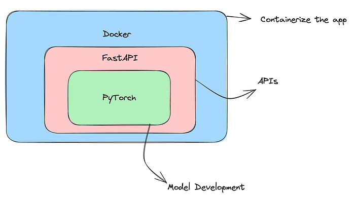
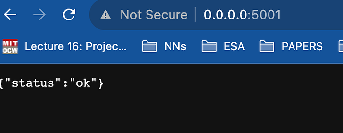
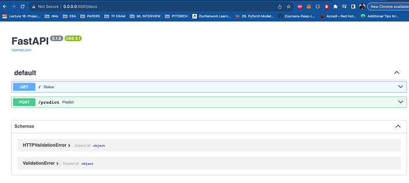
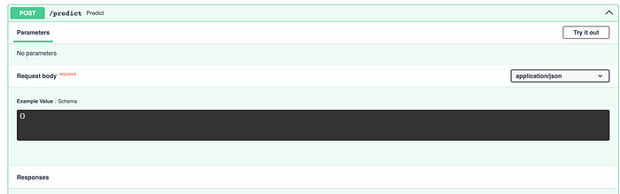
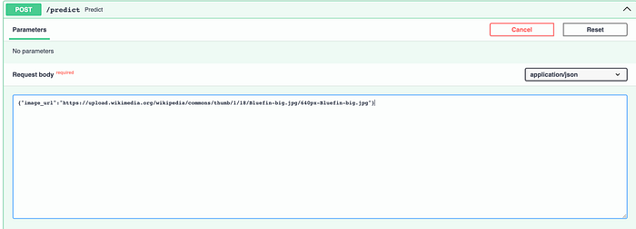
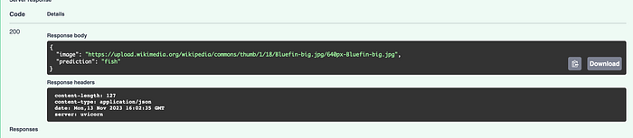
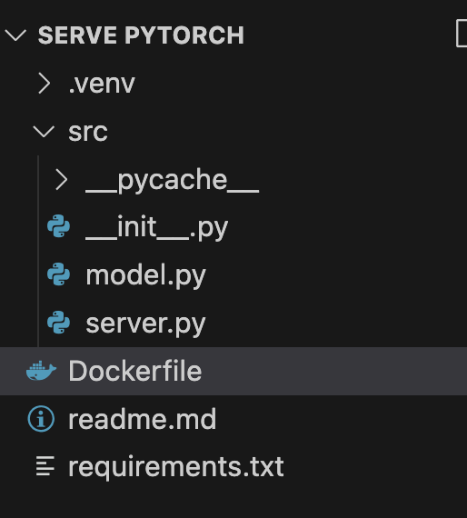
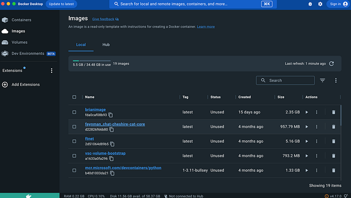

Serving a PyTorch Model with FastAPI and Docker
Learn how to develop a complete Machine Learning Service.
May 15, 2024 · PyTorch, Docker, FastAPI
Introduction
Working on personal Machine/Deep Learning projects is very enjoyable. In the evenings, in front of the laptop, you code things you like, you read interesting papers, and you don’t have any deadlines to meet. We all know that programming is only good if you are not doing it for work! 😂
Anyway, even if it is just a personal project, one of the greatest satisfactions comes when what you have done starts to be used by other people as well. So, there is a need for you to make your model available to others and to learn the right tools to do so. In this article, I will show you how to serve a Deep Learning model developed in PyTorch using FastAPI and Docker.

Set Up the Server with FastAPI
First, we create a computer vision model. This model will be able to recognize cat images and fish images. To do this we take a pre-trained network of type ResNet50 and change the last classification layer so that the output is binary.
I put the following code in a file called model.py
from torchvision import models
import torch.nn as nn
CatfishClasses = ["cat", "fish"]
CatfishModel = models.resnet50()
CatfishModel.fc = nn.Sequential(
nn.Linear(CatfishModel.fc.in_features, 500),
nn.ReLU(),
nn.Dropout(),
nn.Linear(500, 2)
)We now instantiate the server with FastAPI to which clients can connect to ask our model to make predictions.
from PIL import Image
from torchvision import transforms
import torch
import os
from fastapi import FastAPI
from fastapi.responses import JSONResponse
from .model import CatfishModel, CatfishClasses
from io import BytesIO
from fastapi import HTTPException
import requests
app = FastAPI()
def open_image(image_path):
# Add any necessary image preprocessing logic here
image = Image.open(image_path)
return image
def load_model():
return CatfishModel
@app.get("/")
def status():
return {"status": "ok"}
@app.post("/predict")
async def predict(data: dict):
img_url = data.get("image_url")
try:
# Download the image from the internet
response = requests.get(img_url)
response.raise_for_status()
# Load and preprocess the image
img_tensor = transforms.ToTensor()(open_image(BytesIO(response.content)))
img_tensor = img_tensor.unsqueeze(0) # Add a batch dimension
# Make the prediction
model = load_model()
prediction = model(img_tensor)
# Get the predicted class
predicted_class = CatfishClasses[torch.argmax(prediction).item()]
return JSONResponse(content={"image": img_url, "prediction": predicted_class})
except requests.RequestException as e:
raise HTTPException(status_code=400, detail=f"Error downloading image: {e}")
if __name__ == "__main__":
import uvicorn
uvicorn.run(
"your_module_name:app",
host=os.environ.get("HOST", "localhost"),
port=int(os.environ.get("PORT", 5000)),
reload=True,
)In the previous code, we initially have all the useful imports. After that as a matter of practice, we initialize our FastAPI app with the command:
app = FastAPI()The beauty of FastAPI is that it allows us to create simple routes, so we can develop APIs with the @app.get(“route-name”) command and then continue to code it as if it were a simple Python function.
For example, the following is the main root because it is assigned the name “/”.
@app.get("/")
def status():
return {"status": "ok"}Instead, the route where we launch a prediction is an API post call because we need to load some data. It will then preprocess the image and send us the result in JSON format.
@app.post("/predict")
async def predict(data: dict):
img_url = data.get("image_url")
try:
# Download the image from the internet
response = requests.get(img_url)
response.raise_for_status()
# Load and preprocess the image
img_tensor = transforms.ToTensor()(open_image(BytesIO(response.content)))
img_tensor = img_tensor.unsqueeze(0) # Add a batch dimension
# Make the prediction
model = load_model()
prediction = model(img_tensor)
# Get the predicted class
predicted_class = CatfishClasses[torch.argmax(prediction).item()]
return JSONResponse(content={"image": img_url, "prediction": predicted_class})
except requests.RequestException as e:
raise HTTPException(status_code=400, detail=f"Error downloading image: {e}")Perfect, to run the server now, we can use the following cli command. Notice that we also need to assign a port and an address.
uvicorn src.server:app --host 0.0.0.0 --port 5000 --reloadAs soon as you open your server at the link that will appear, you should be able to see the message: “status: ok”.

Now the beauty of FastAPI is that it immediately provides us with a frontend to interact with our bees. Just add a “/docs” to the URL in localhost.
You should visualize something like this.

Now you can try out the predict API. Click on the “try out” button to use it.

After that enter the JSON that the API expects as input.

You can take the URL of any image from the Internet of a fish or a cat. In my case, this is the body I gave as input:
{"image_url":"https://upload.wikimedia.org/wikipedia/commons/thumb/1/18/Bluefin-big.jpg/640px-Bluefin-big.jpg"}The following is the response I received, a JSON with my URL and model prediction, great!

Take note that the model will err very often because we imported a non-pretrained model, but only the architecture, for quick development. If you want to use a pre-trained model, just add a parameter.
CatfishModel = models.resnet50(pretrained = True)
CatfishModel.fc = nn.Sequential(
nn.Linear(CatfishModel.fc.in_features, 500),
nn.ReLU(),
nn.Dropout(),
nn.Linear(500, 2),
)Or even better, when you load the model, use a checkpoint that is in your directory, such as in the following way.
def load_model():
m = CatfishModel()
location = os.environ["MODEL_LOCATION"]
m.load_state_dict(torch.load(location))
return m
Create a Docker Container
Now, we have created a minimal web service. We are ready to upload it to a cloud provider such as Amazon AWS, Google Cloud or Microsoft Azure, but the procedure seems quite complex. What can we do?
The best method is to containerize the web service using docker, let’s see now how to do that. Containerize helps us to have interoperability on different devices, so we will no longer have the problem “But on my computer, it worked, why didn’t it work on yours?” Docker helps us to make sure that the code we write works everywhere, and therefore also on Amazon or Google computers, that is, on the cloud.
The main concept to know about Docker is that a Docker image is like an environment that defines the container. The image contains the code that will run, including definitions for libraries and dependencies needed. A Docker container is a running Docker image.
To create an image you usually write a file with all the specifications called a Dockerfile.
So, let’s create this file in our directory following this structure.

And here is a simple dockerfile (complete with comments) that we can use.
# Use an official Python runtime as a parent image
FROM python:3.8-slim
# Set the working directory to /app
WORKDIR /app
# Copy the current directory contents into the container at /app
COPY . /app
# Install any needed packages specified in requirements.txt
RUN pip install --no-cache-dir -r requirements.txt
# Make port 80 available to the world outside this container
EXPOSE 80
# Define environment variable
ENV NAME World
# Run app.py when the container launches
CMD ["uvicorn", "src.server:app", "--host", "0.0.0.0", "--port", "80"]Remember to save all your requirements in a “requirements.txt” file. You can use pip quickly to do this:
pip freeze > requirements.txtNow we can build our docker image using this file.
To do this, you must have docker running in the background if you do not have it you must download it from here.

Once docker is running, you can go back to your editor and build the image from the terminal with the following command.
docker build -t catfish-service .Once the image is built, you can launch your container and then the FastAPI service using docker. Then stop FastAPI now and use the docker run command.
The docker run command is used to run a Docker container based on a specified image. In your case, the command is:
docker run -p 80:80 catfish-serviceHere’s a breakdown of the command:
docker run: Initiates the process of running a Docker container.p 80:80: Specifies port mapping. It maps the port80on the host machine to the port80in the Docker container. This means that any requests made to the port80on the host will be forwarded to the port80in the container. The format isp host_port:container_port.catfish-service: This is the name or ID of the Docker image that you want to run as a container. It represents the image you built, possibly named "catfish-service."
So, when you run this command, it starts a new Docker container based on the “catfish-service” image, and it forwards traffic from the port 80 on the host to port 80 in the container.
This is commonly used for web applications where the application inside the Docker container listens on port 80, and you want to make that application accessible from the port 80 on the host machine.
If you run the command, the service should restart as before because it is written in the Dockerfile itself what is the command to start FastAPI.
Final Thoughts
It’s important to build a project that is easily usable by others as well. Often, the reproducibility of projects is not given much consideration, especially in academic circles, due to a lack of software engineering skills. However, remember that the reproducibility of experiments is fundamental to science! These are some of the tools that those involved in Machine Learning should know how to use, but besides these, there are many others. Knowing how to use them will give you a significant competitive advantage over other data scientists.
If you are interested in this article, follow me on Medium! 😁
💼 Linkedin ️| 🐦 Twitter | 💻 Website
This article was previously published on Towards Data Science.